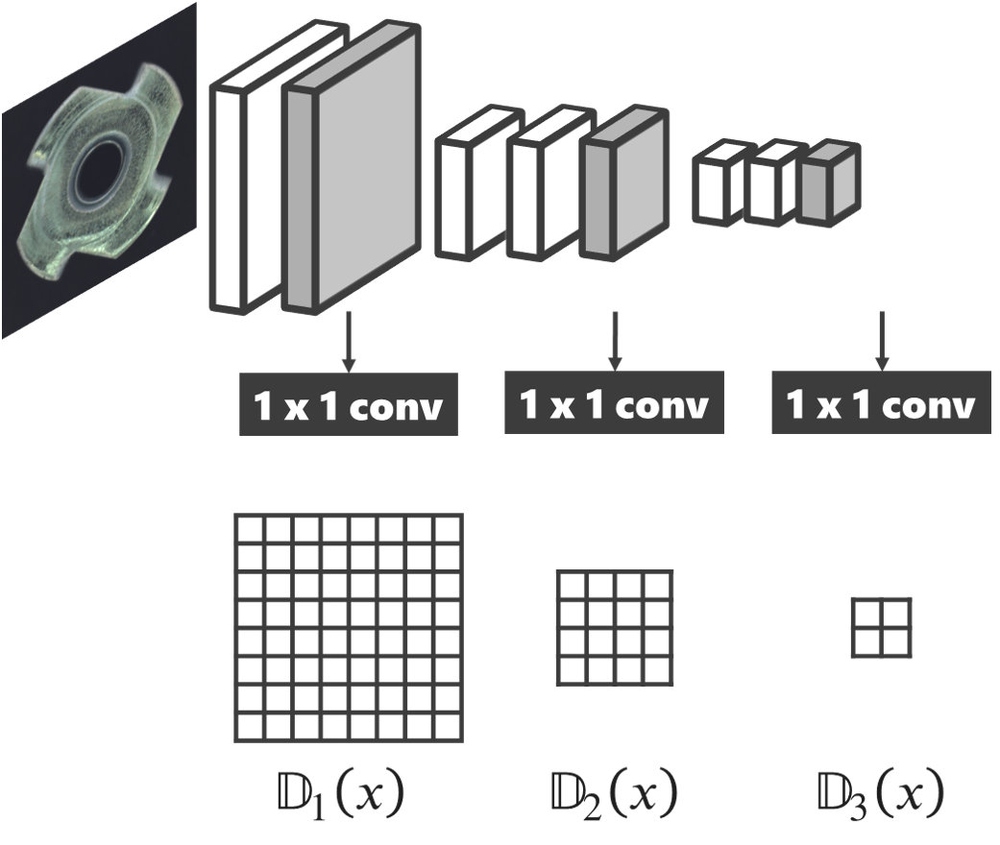

はじめに
工業製品の製造工程において，出荷製品の品質安定化のために検査は必要不可欠である． とくに外観検査工程では人による目視検査が主であるが，検査員毎の判断基準のばらつきが長年の課題であった． 近年では深層学習技術の進歩により，これまで困難とされてきた目視検査工程でも自動化が検討されている． 従来の深層学習では正常品と異常品を識別するために大量のサンプルが必要であるが，現実には大量の異常品を確保することは困難である． そのため，正常品のみ，もしくは正常品と少数の異常品から良否識別できる枠組みが求められている． また，画像検査においては，1枚の異常画像の中に正常な領域と異常な領域が混在していることがある． このとき，異常な領域が占める割合が大きければ，検出は容易であるが，小さい場合は難しい． また，異常には様々な種類が存在し，それぞれを検出するのに適した解像度が存在するはずである． そのため，本稿ではComplementary GANに Multi-scale Patch の枠組みを加えたモデルに正常品のみを学習させ，正常分布とその補集合分布をモデリングし異常検知を行う手法を提案する．
従来のNNを使った異常検知
差分ベース
- Autoencoder
- AnoGAN
- ADGAN
メリット
- 差分ベースなので，欠陥箇所のLocalizationが可能
- 学習が容易
デメリット
- 外観検査においては差分の出づらい欠陥が存在する
- Blurが発生し，高周波成分が差分として現れてしまう
潜在変数ベース
- Flow-based Model
- Adversarial Autoencoder
メリット
- 異常度を対数尤度としてダイレクトに算出できる
- 潜在変数による低次元データの可視化が可能
デメリット
- 欠陥情報が消失してしまう
- Out of distributionのデータでも尤度が高くなってしまうことがある．
Complementary GAN
そもそもGANとは？
- GeneratorとDiscriminatorの2つのNetworkを持つ
- Generatorは，Discriminatorを騙すように本物に近いデータを生成する
- Discriminatorは，入力が本物のデータなのか・Generatorによって生成された偽のデータなのかを識別する
- GeneratorとDiscriminatorが↑の学習をすることで，Generatorは本物に近いデータを生成できるようになる．

結局GANは何を学習している？
- Discriminatorは生成分布とデータ分布の”離れ度合い”を測るDivergence Estimator
- Generatorは算出された”離れ度合い”を最小化する
- その結果，生成分布とデータ分布が近づいていき，本物に近い画像が生成できる

Discriminatorの出力って異常検知に使える？
- Discriminatorは，本物と偽物が見極められるので，本物を正常データとすれば，正常/異常が分別できるのでは！？という考え
- それは難しい
- Discriminatorが識別しているのは，本物のデータであるか偽物のデータであって，偽物データの中に異常分布の要素は全く含まれていない
GANとComplementary GANの違いは？
- GANはデータ分布と生成分布を測り，近づける
- Complementary GANはデータ分布と生成分布を測り，データ分布の補集合分布と生成分布を近づける
- つまり，Complementary GANは正常データには存在しないデータを生成し，Discriminatorは正常と正常ではないの識別境界となる
Multi-scale Patch Discriminator
- 外観検査では，欠陥の大きさは様々
- CNNで，Conv + Poolingを積み重ねていくと小さい欠陥の情報は消えてしまう
- かといって，浅すぎるCNNでは識別はできない

そこで，Discriminatorの出力を[0, 1]のスカラーではなく，正常度MAPとすることで↑の問題に対処する

実験
LEDチップ画像
サンプル
データ内訳
| 良品 | 不良品 | |
|---|---|---|
| training | 70000 | 0 |
| test | 10000 | 204 |
生成された補集合画像
- 不良品画像とは一致しないが，良品画像には近いが良品ではないものが生成できていることを確認
Discriminatorによる異常度MAP
- 赤に近いほど異常度が大きく，青に近いほど異常度が低い
- 各行左から，入力・8x8 MAP・4x4 MAP・2x2 MAP
- 8x8 MAPでは小さい欠陥が，2x2 MAPでは面積の大きい欠陥が検出される
精度
Reference
- Goodfellow, I. J., Pouget-Abadie, J., Mirza, M., Xu, B., Warde-Farley, D., Ozair, S., … Bengio, Y. (2014). Generative Adversarial Nets. Advances in Neural Information Processing Systems, 2672–2680.
- Zheng, P., Yuan, S., Wu, X., Li, J., & Lu, A. (2018). One-Class Adversarial Nets for Fraud Detection. ArXiv Preprint ArXiv:1803.01798.
- Bergmann, P., Fauser, M., Sattlegger, D., & Steger, C. (2019). MVTec AD – A Comprehensive Real-World Dataset for Unsupervised Anomaly Detection. The IEEE Conference on Computer Vision and Pattern Recognition (CVPR).
- Karras, T., Laine, S., & Aila, T. (2018). A Style-Based Generator Architecture for Generative Adversarial Networks. Retrieved from https://arxiv.org/abs/1812.04948